BSRE 導入ガイド
購入からアクティベートまでの完全ガイド
1. BSRE の購入方法
1ボットを開始
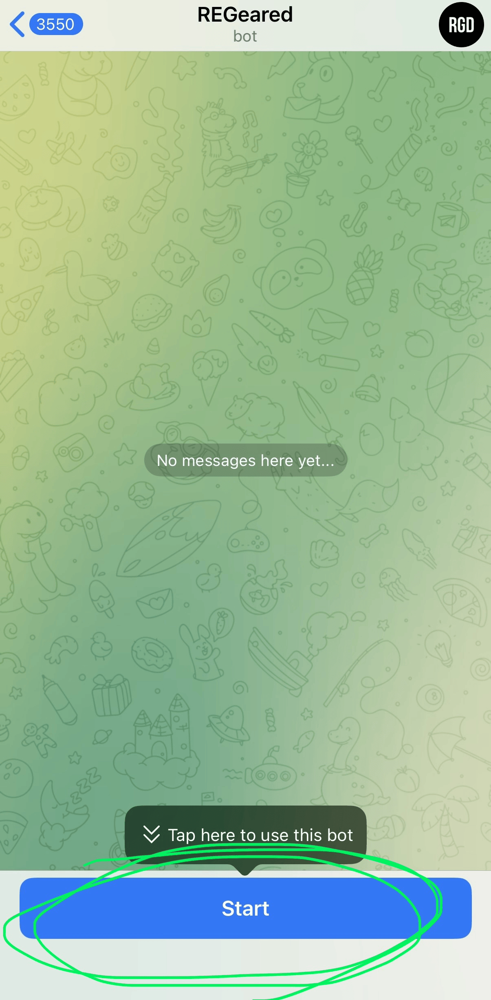
2Balanceを開く
画面の左側にある、「Balance」を押します。
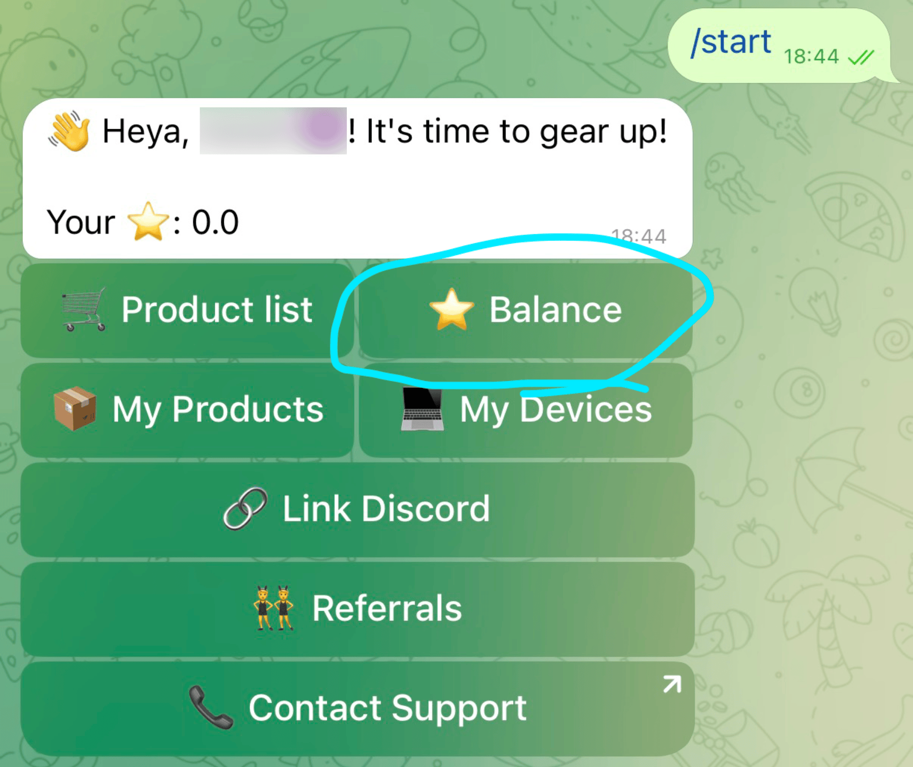
3金額の選択
「2000⭐️」を押します。
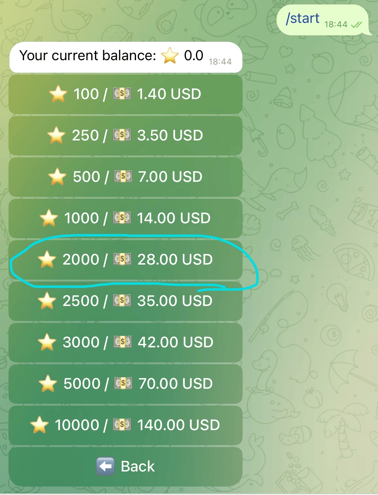
4決済方法の選択
「Telegram stars」を選択します。
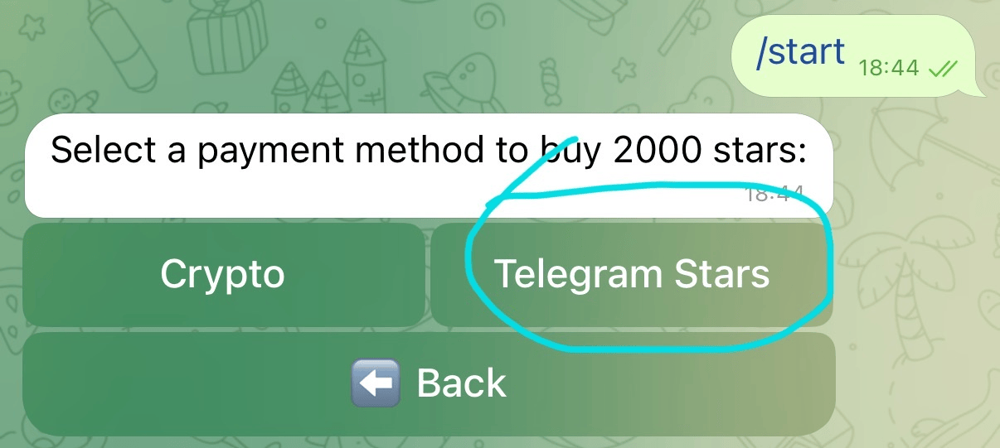
5決済の完了
Telegram starsを購入して、支払いを済ませます。
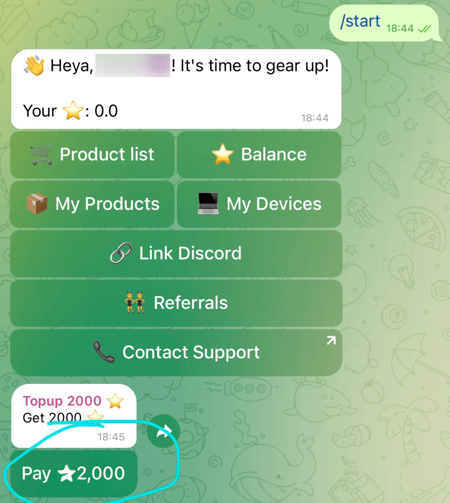
6メニューの表示
チャット欄に「/start」とbotに送って、メニューを表示させます。
7プロダクトリスト
「Product list」を押します。
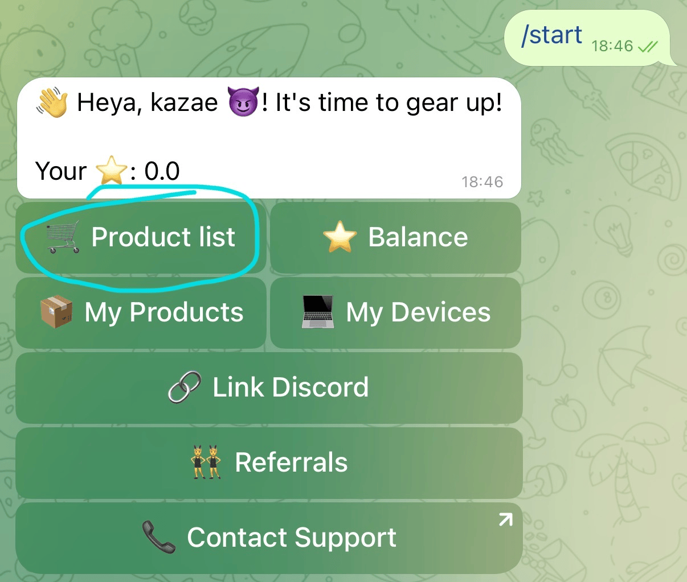
8商品の確認と購入
2回「NEXT」を押して、メッセージの上に「bsre」と書いてあることを確認してから、「buy now」をタップします。
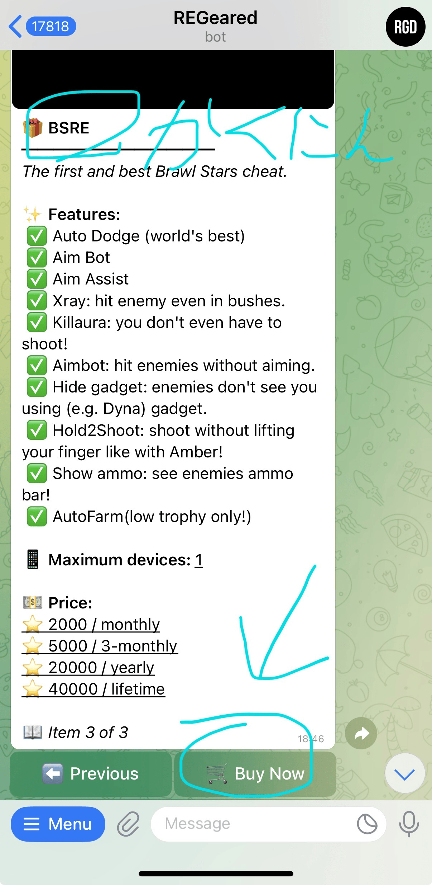
9スター数の確認
「⭐️2000」をタップします。
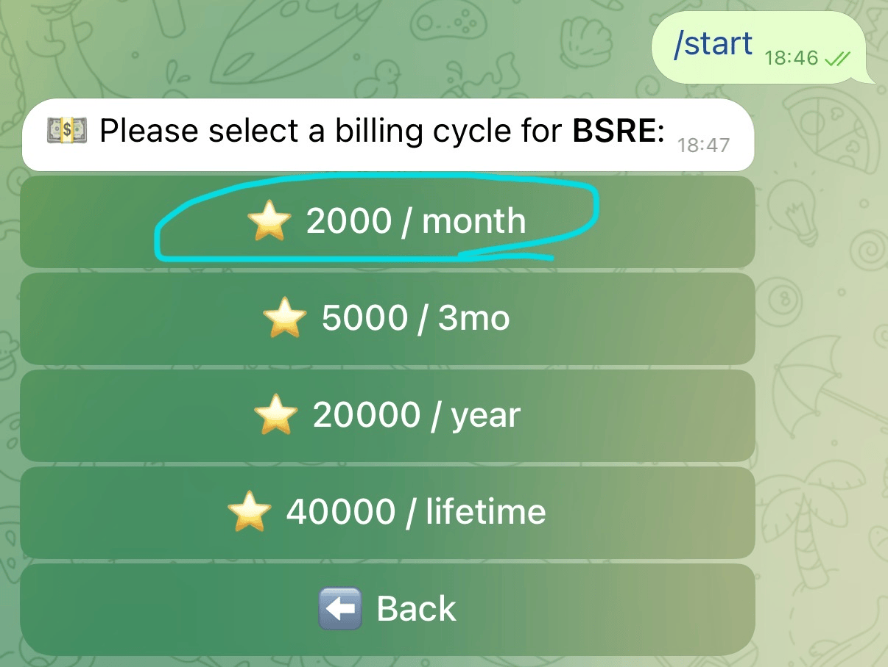
10購入確定
「✅Purchase」をタップします。
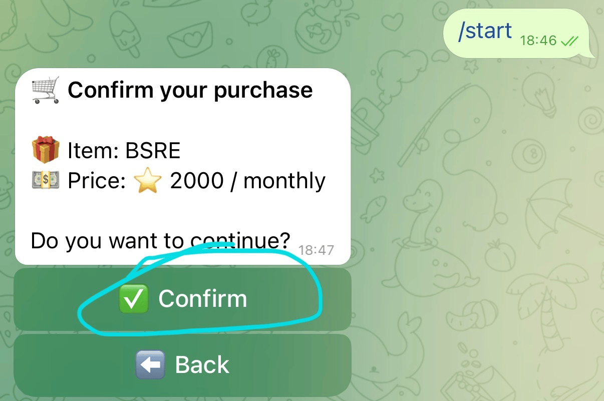
2. BSRE のインストール
1アプリの入手
右上の「入手」ボタンを押してください。
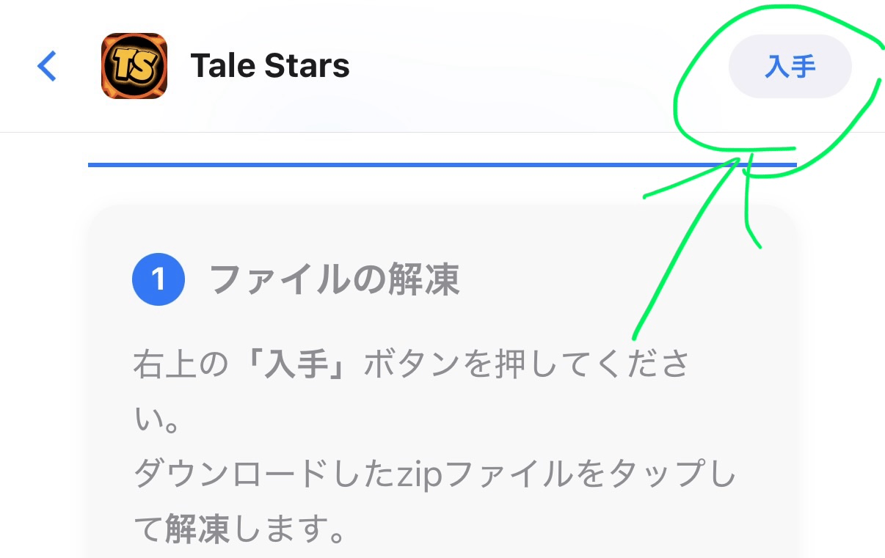
2Telegramを開く
「このページをTelegramで開きますか？」と出るので、「開く」をタップしてください。

3ファイルのダウンロード
ハイライトされたファイルの「↓（ダウンロード）」ボタンを押してダウンロードを開始してください。

4ファイルに保存
ダウンロードが終わったら、共有メニューを開いて「ファイルに保存」を選択してください。

6追加ボタンを押す
右上の「+」ボタンをタップします。
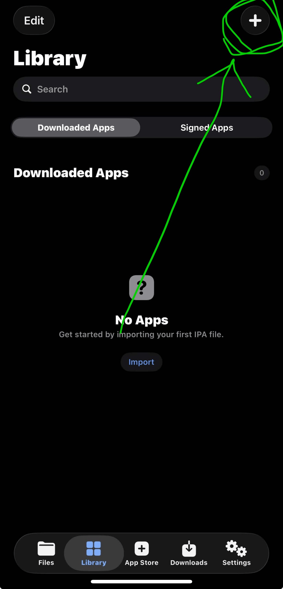
7インポート形式の選択
「import from files」を選択します。
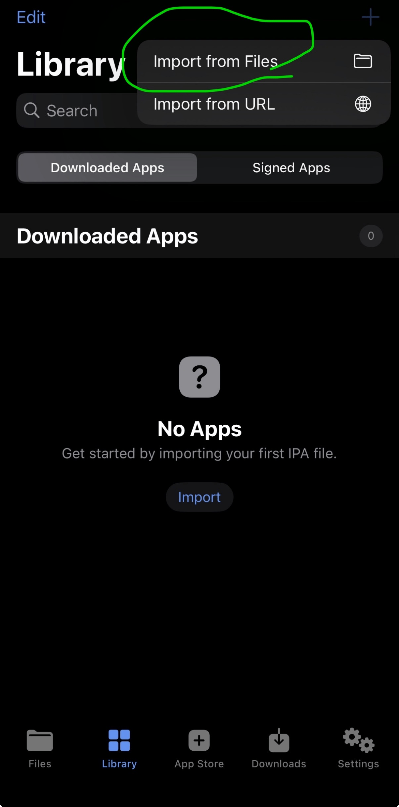
8最近使った項目
右下の「最近使った項目」を選びます。
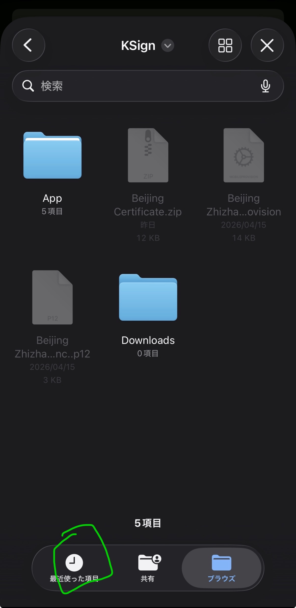
9ipaファイルの選択
BSREのipaを選択してインポートします。

10アプリを選択
リストに追加されたBSREをタップします。

11署名の開始
「sign&install」を押し、次の画面で「Start signing」をタップ。5分程度待ちます。

12完了
画面にcompletedと出たら、インストールを確認して終了です。